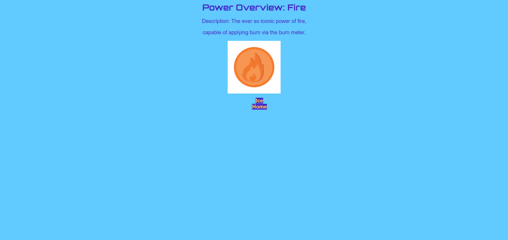
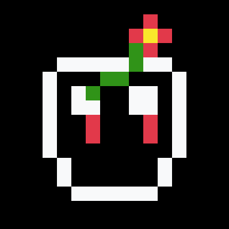
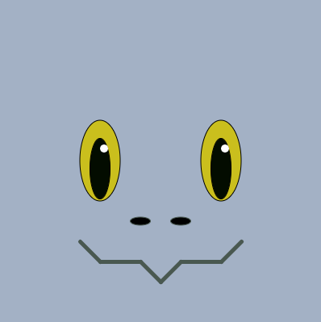
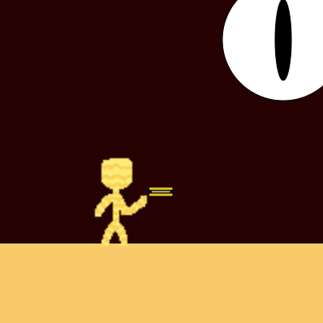
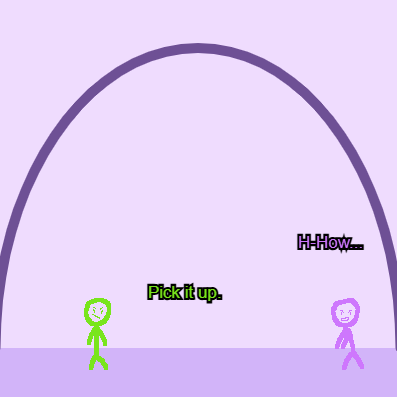
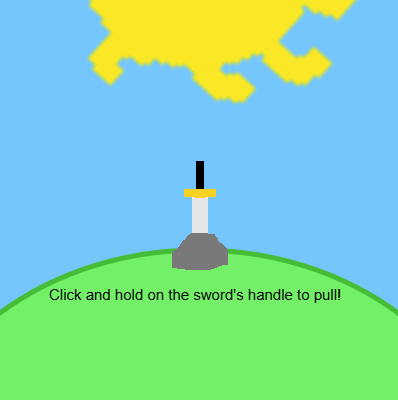
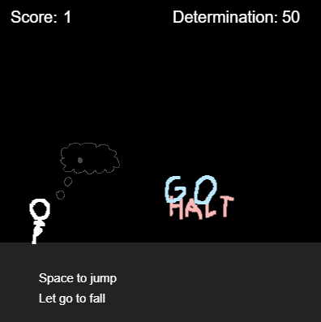
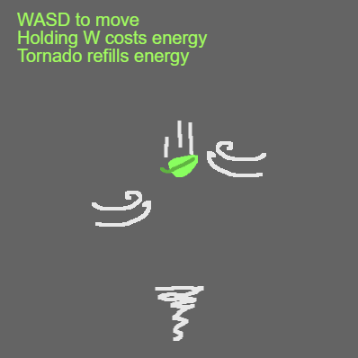

My Projects
Here is my list of the projects I've worked on!
BobaDrops and Swirl for HackClub (HTML and CSS)

Boba Drops and Swirl WebsiteThe Boba Drops and Swirl project are linked together as they continue off of one another. In the Boba Drops segment you must make a functional webpage that has an image, title, description, and color. In the Swirl portion it was required to have a minimum of three pages, incorporate CSS pseudo classes, create a favicon, and embed a font.
Sprig Game for Hackclub (JavaScript)

Sprig game made for Hackclub of which must have one minute of gameplay an be original in concept. My game was going to be a platformer but I couldn't figure out gravity and I ws falling behind so this game is kinda rushed. So, I did use the tutorial game as a base. Controls are WASD to move and J to restart. The gimmick revolves around secret passages and fake goals.
Robot Faces Mini Project for Code.org (JavaScript)

This project revolved around creating an image that randomizes each time the program is ran. The requirements were that there should be four different shapes and four variables that all use the randomNumber() function are used. Mine is pretty good but since I spent so much time making the base image the only thing that really changes is the color of everything. The design is supposed to be remiscent of a kobold from DnD and with that certain parts can only be certain colors. The eyes and iris can only be shades of red and green with blue excluded which is because kobolds usually have warmer colored eyes. The mouth color and skin color have more freedom using red, green, and blue hues. The shading and tinting of colors is also controlled in a way that makes it so everything stands out such as how the mouth color is only able to be a darker color and the skin is limited to lighter colors.
Captioned Scenes Project for Code.org (JavaScript)

This project required that you create a scene using the text function in code.org using at least two shapes, two sprites, and two lines of text. I used custom sprites of a sand person and sandwich. The really bad and cheesy joke here is about how the sand person is eating a sandwich. The setting of the scene takes place in the fictional dimension Anti-World. Which I also made up, the gimmick of this world being that things that are considered inanimate (like sand) are now alive and living things are now inanimate materials. The sandwich was later animated in a later lesson talking about how the draw loop works of which the sandwich now has a random y-position of 250 + randomNumber(-5, -20).
Mini Animation Project for Code.org (JavaScript)

This project is largely similar to the Captioned Scenes Project only now it has to have animation by default. This one required there be two shapes, two sprites, and two lines of text along with two uses of animation. For the two animations I added a randomNumber() function and a counter pattern to the dagger sprite adding 5 every frame to the x-position to make it look as if its sliding across the floor. The scene is supposed to a really scuffed version of a scene I imagined with my OCs.
Interactive Card Project for Code.org (JavaScript)

The goal of this project was to make an interactive card that responds to user input. The requirements being, getting feedback from a peer and making changes if needed, the usage of multiple sprites, adding user input via conditionals, usage of variables, positioning sprites with the coordinate system and animating them in different ways, and at least one variable that uses a counter pattern. The card depicts a sword in the stone that you must pull by clicking and holding the left mouse key on the area where the handle is until it is pulled out. For the sword I used a counter pattern that decreases the y-position by 0.2 every frame which only runs when the mouse is held at a y-position inbetween 200 and 150 (This does technically mean you can click at a farther x-position but I digress). The sun, sword, and rock sprites are all custom, the sun sprite uses a counter pattern to spin clockwise at a rate of 0.7 and slows down when holding down on the sword to give the illusion time is slowing down. The other sprites use a randomNumber() function to make them appear as though they are shaking. Finally when the sword sprite reaches a y-position less than 190 the sprite animation switches to the "swordUnlocked" animation and snaps to a y-position 150.
Side Scroller Game Project for Code.org (JavaScript)

This was the first game project we did in Code.org. We needed to use a project guide, use at least three different sprites, use conditionals to create controls (primarily for jumping) with the draw loop, use conditionals to loop different sprites with a draw loop, use conditionals to create sprite interaction inside the draw loop, and use two variables not linked to sprites. At the beginning I was mainly focused on creating a more dynamic jumping system one where the player has more control compared to the fixed jump height in the example game. I achieved this by abusing the heck out of the && (and) and || (or) commands such as "if (keyDown("space") && player.y === 275) {player.velocityY = -10;}" which when translated into individual commands for the computer reads as, "if space is held down and the player sprite y-position is equal to 275, let the player rise at a velocity of 10 units every frame". I also added an energy variable that goes up every time you get a collectible and made it so when you touch an obstacle you lose energy of which the energy acts as your health. Further more, that energy can be expended to pull in the collectible (left arrow key) or used to slow down time (right arrow key). Can get boring after awhile though but it's pretty cool nevertheless.
Flyer Game Project for Code.org (JavaScript)

This is currently my favorite project I've done and probably my most well made it's simple yet a fun concept. The goal of the flyer game project was to create a game where you well, fly and collect something with various obstacles trying to knock you off screen. The project called for at least four sprites, controls to play the game, other sprites that loop across the screen, sprite interactions, and finally other features to make it unique. Much like the first game project I felt like the example game was too hard to control and felt unfair so the first thing I did was make the player sprite's speed velocity based. The game is also solely about falling to reach the tornado sprite as many times as you can. Obstacles also became velocity based which will influence the player's own velocity causing them to fly off the screen if you stay in their range for too long. Furthermore much like the previous game I made there is an energy system, in this case you get energy by hitting the collectible in this case being the tornado which not only boosts you upwards but also replenishes your energy which can be used to move upward and dodge obstacles. As your score increases the tornado also begins to move and increase in speed. It took me way to long to find out how to make the collectible bounce off the sides of the background and I'm very happy I managed to figure it out. My only complaint is like the previous game as well it feels really slow to play but other than that this is my favorite project I've done so far. Besides this portfolio at least.